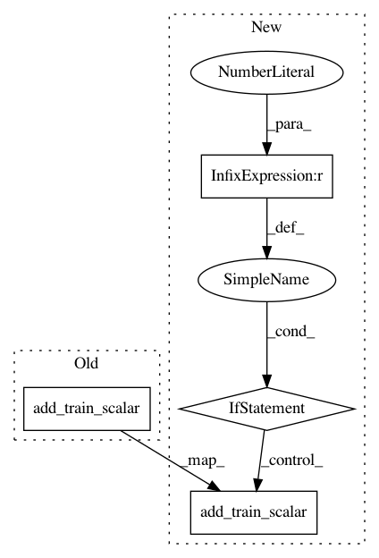

f0ed1d457447c122f8ba59abfc8fe8f6de1ae869,allennlp/training/trainer.py,Trainer,_parameter_and_gradient_statistics_to_tensorboard,#Trainer#Any#Any#,547
Before Change
self._tensorboard.add_train_scalar("gradient_mean/" + name,
grad_data.mean(),
epoch)
self._tensorboard.add_train_scalar("gradient_std/" + name,
grad_data.std(),
epoch)
// norm of gradients
if batch_grad_norm is not None:
self._tensorboard.add_train_scalar("gradient_norm",
batch_grad_norm,
After Change
grad_data = param.grad.data
// skip empty gradients
if torch.prod(torch.tensor(grad_data.shape)).item() > 0: // pylint: disable=not-callable
self._tensorboard.add_train_scalar("gradient_mean/" + name,
grad_data.mean(),
epoch)
self._tensorboard.add_train_scalar("gradient_std/" + name,
grad_data.std(),
epoch)
else:
// no gradient for a parameter with sparse gradients
logger.info("No gradient for %s, skipping tensorboard logging.", name)
// norm of gradients
if batch_grad_norm is not None:
self._tensorboard.add_train_scalar("gradient_norm",
batch_grad_norm,
epoch)
In pattern: SUPERPATTERN
Frequency: 3
Non-data size: 4
Instances
Project Name: allenai/allennlp
Commit Name: f0ed1d457447c122f8ba59abfc8fe8f6de1ae869
Time: 2018-06-29
Author: matt-peters@users.noreply.github.com
File Name: allennlp/training/trainer.py
Class Name: Trainer
Method Name: _parameter_and_gradient_statistics_to_tensorboard
Project Name: allenai/allennlp
Commit Name: 891327dad87ce60005c6ae089ad6b688dddb6ba1
Time: 2019-10-25
Author: dwadden@cs.washington.edu
File Name: allennlp/training/tensorboard_writer.py
Class Name: TensorboardWriter
Method Name: log_parameter_and_gradient_statistics
Project Name: allenai/allennlp
Commit Name: dac486ef49622f385ac478006a8e9d6de85fbe13
Time: 2019-08-15
Author: danieldeutsch@users.noreply.github.com
File Name: allennlp/training/tensorboard_writer.py
Class Name: TensorboardWriter
Method Name: log_parameter_and_gradient_statistics